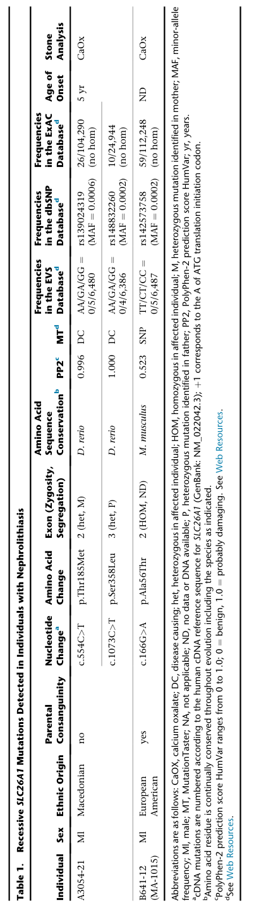

SLC26A1-related hypersulfaturia is a very rare autosomal recessive renal tubular disorder of sulfate homeostasis caused by biallelic loss-of-function variants in SLC26A1, which encodes sulfate anion transporter 1 (SAT1), a sodium-independent sulfate/bicarbonate exchanger on the basolateral membrane of the renal proximal tubule. Filtered sulfate is reabsorbed by apical SLC13A1 working in series with basolateral SLC26A1; loss of SLC26A1 causes renal sulfate wasting with an inappropriately high fractional excretion of sulfate and marked hyposulfatemia. The reported patient presented with painful perichondritis, attributed to sulfate deficiency, and mildly reduced bone mineral density. Heterozygous carriers of damaging SLC26A1 variants have lower plasma sulfate at the population level. The same gene is also implicated, more controversially, in calcium oxalate nephrolithiasis, which is curated separately.
Ask a research question about SLC26A1-Related Hypersulfaturia. OpenScientist will conduct autonomous deep research using the Disorder Mechanisms Knowledge Base and PubMed literature (typically 10-30 minutes).
Do not include personal health information in your question. Questions and results are cached in your browser's local storage.
Conditions with similar clinical presentations that must be differentiated from SLC26A1-Related Hypersulfaturia:
name: SLC26A1-Related Hypersulfaturia
creation_date: "2026-10-10T23:15:00Z"
description: >-
SLC26A1-related hypersulfaturia is a very rare autosomal recessive renal
tubular disorder of sulfate homeostasis caused by biallelic loss-of-function
variants in SLC26A1, which encodes sulfate anion transporter 1 (SAT1), a
sodium-independent sulfate/bicarbonate exchanger on the basolateral membrane
of the renal proximal tubule. Filtered sulfate is reabsorbed by apical
SLC13A1 working in series with basolateral SLC26A1; loss of SLC26A1 causes
renal sulfate wasting with an inappropriately high fractional excretion of
sulfate and marked hyposulfatemia. The reported patient presented with
painful perichondritis, attributed to sulfate deficiency, and mildly reduced
bone mineral density. Heterozygous carriers of damaging SLC26A1 variants
have lower plasma sulfate at the population level. The same gene is also
implicated, more controversially, in calcium oxalate nephrolithiasis, which
is curated separately.
category: Metabolic Disorder
synonyms:
- Hypersulfaturia
- SLC26A1-related renal sulfate wasting
- SAT1 deficiency with hyposulfatemia
parents:
- Genetic Kidney Disease
- Renal tubular transport disorder
disease_term:
preferred_term: hypersulfaturia
term:
id: MONDO:0957268
label: hypersulfaturia
inheritance:
- name: Autosomal recessive inheritance
inheritance_term:
preferred_term: Autosomal recessive inheritance
term:
id: HP:0000007
label: Autosomal recessive inheritance
description: >-
The reported proband was homozygous for SLC26A1 p.Leu275Pro; her
heterozygous mother had low-normal plasma sulfate. Recessive
inheritance rests on this single family (OMIM 620372).
evidence:
- reference: PMID:36719378
reference_title: "SLC26A1 is a major determinant of sulfate homeostasis in humans."
supports: SUPPORT
evidence_source: HUMAN_CLINICAL
snippet: "Whole-exome sequencing, as confirmed by Sanger sequencing, revealed that the patient was homozygous for a mutation (c.824T>C, p.Leu275Pro) in the anion transporter 1 (SLC26A1)."
explanation: Homozygous biallelic SLC26A1 variant in the affected proband.
pathophysiology:
- name: Biallelic SLC26A1 Sulfate Transporter Loss of Function
description: >-
Biallelic SLC26A1 loss-of-function variants reduce sodium-independent
sulfate/bicarbonate exchange by SAT1 at the basolateral membrane of
renal proximal tubule cells.
biological_scale: MOLECULAR
genes:
- preferred_term: SLC26A1
term:
id: hgnc:10993
label: SLC26A1
genetic_context:
variant_origin: GERMLINE
zygosity: HOMOZYGOUS
functional_impact_category: LOSS_OF_FUNCTION
description: Homozygous germline SLC26A1 c.824T>C, p.Leu275Pro in the reported patient.
molecular_functions:
- preferred_term: sulfate:bicarbonate antiporter activity
term:
id: GO:0015383
label: sulfate:bicarbonate antiporter activity
modifier: DECREASED
biological_processes:
- preferred_term: sulfate transmembrane transport
term:
id: GO:1902358
label: sulfate transmembrane transport
modifier: DECREASED
cellular_components:
- preferred_term: basolateral plasma membrane
term:
id: GO:0016323
label: basolateral plasma membrane
cell_types:
- preferred_term: epithelial cell of proximal tubule
term:
id: CL:0002306
label: epithelial cell of proximal tubule
evidence:
- reference: PMID:36719378
reference_title: "SLC26A1 is a major determinant of sulfate homeostasis in humans."
supports: SUPPORT
evidence_source: IN_VITRO
snippet: "Functional expression assays confirmed a substantial reduction in sulfate transport for the SLC26A1 mutation of our patient"
explanation: Oocyte expression shows the patient allele reduces sulfate transport.
- reference: PMID:36719378
reference_title: "SLC26A1 is a major determinant of sulfate homeostasis in humans."
supports: SUPPORT
evidence_source: OTHER
quote_role: BACKGROUND
snippet: "Transcellular sulfate reabsorption is mediated by the apical membrane sodium-sulfate cotransporter SLC13A1 working in series with the basolaterally located SLC26A1 (sulfate anion transporter 1, Sat1) (3, 4)."
explanation: Background statement placing SLC26A1 at the basolateral step of proximal tubular sulfate reabsorption.
downstream:
- target: Renal Sulfate Wasting
causal_link_type: DIRECT
description: Loss of basolateral sulfate exit impairs transcellular sulfate reabsorption.
- name: Renal Sulfate Wasting
description: >-
Impaired proximal tubular sulfate reabsorption leaves an inappropriately
high fractional excretion of sulfate despite low plasma sulfate.
biological_scale: TISSUE
locations:
- preferred_term: proximal tubule
term:
id: UBERON:0004134
label: proximal tubule
evidence:
- reference: PMID:36719378
reference_title: "SLC26A1 is a major determinant of sulfate homeostasis in humans."
supports: SUPPORT
evidence_source: HUMAN_CLINICAL
snippet: "Thus, the observation that the patient had a mean FEI of sulfate of 24% when plasma sulfate was severely depressed indicated urinary sulfate wasting with inappropriately high fractional sulfate excretion in the urine."
explanation: Direct clinical measurement of renal sulfate wasting in the patient.
- reference: PMID:30383413
reference_title: "Absence of the sulfate transporter SAT-1 has no impact on oxalate handling by mouse intestine and does not cause hyperoxaluria or hyperoxalemia."
supports: SUPPORT
evidence_source: MODEL_ORGANISM
snippet: "the renal clearances of sulfate and creatinine indicated diminished rates of sulfate reabsorption by the proximal tubule"
explanation: Slc26a1-knockout mice show reduced proximal tubular sulfate reabsorption.
downstream:
- target: Hypersulfaturia
causal_link_type: DIRECT
description: Unreabsorbed filtered sulfate appears in the urine.
- target: Hyposulfatemia
causal_link_type: DIRECT
description: Urinary sulfate loss lowers plasma sulfate.
evidence:
- reference: PMID:36719378
reference_title: "SLC26A1 is a major determinant of sulfate homeostasis in humans."
supports: SUPPORT
evidence_source: HUMAN_CLINICAL
snippet: "these observations indicate that the p.Leu275Pro mutation clearly affected plasma sulfate levels due to urinary sulfate wasting, with minor, if any, impact on urinary oxalate levels."
explanation: Links the patient's low plasma sulfate to urinary sulfate wasting.
- name: Hyposulfatemia
description: >-
Systemic sulfate depletion. Because sulfate is required for
sulfation of cartilage proteoglycans, hyposulfatemia is proposed to
underlie cartilage and bone manifestations.
biological_scale: ORGANISM
chemical_entities:
- preferred_term: sulfate
term:
id: CHEBI:16189
label: sulfate
modifier: DECREASED
evidence:
- reference: PMID:36719378
reference_title: "SLC26A1 is a major determinant of sulfate homeostasis in humans."
supports: SUPPORT
evidence_source: HUMAN_CLINICAL
snippet: "Whole-exome sequencing from a patient presenting with painful perichondritis, hyposulfatemia, and renal sulfate wasting revealed a homozygous mutation in SLC26A1"
explanation: Hyposulfatemia in the biallelic patient.
- reference: PMID:30383413
reference_title: "Absence of the sulfate transporter SAT-1 has no impact on oxalate handling by mouse intestine and does not cause hyperoxaluria or hyperoxalemia."
supports: SUPPORT
evidence_source: MODEL_ORGANISM
snippet: "SAT-1-KO mice were, however, profoundly hyposulfatemic"
explanation: Slc26a1-knockout mice are hyposulfatemic.
downstream:
- target: Decreased Plasma Sulfate
causal_link_type: DIRECT
description: Systemic sulfate depletion is measured as low plasma sulfate.
- target: Perichondritis
causal_link_type: INDIRECT_UNKNOWN_INTERMEDIATES
description: >-
Sulfate deficiency is proposed by the authors to explain the
otherwise unexplained perichondritis; the link is inferential.
evidence:
- reference: PMID:36719378
reference_title: "SLC26A1 is a major determinant of sulfate homeostasis in humans."
supports: SUPPORT
evidence_source: HUMAN_CLINICAL
snippet: "It is therefore very likely that the hyposulfatemia was responsible for an otherwise unexplained perichondritis of a mechanically highly stressed joint in our patient."
explanation: Authors' interpretation linking hyposulfatemia to perichondritis.
phenotypes:
- category: Metabolic
name: Decreased Plasma Sulfate
description: Markedly decreased plasma sulfate.
phenotype_term:
preferred_term: Decreased circulating sulfate concentration
term:
id: HP:6000854
label: Decreased circulating sulfate concentration
evidence:
- reference: PMID:36719378
reference_title: "SLC26A1 is a major determinant of sulfate homeostasis in humans."
supports: SUPPORT
evidence_source: HUMAN_CLINICAL
snippet: "Whole-exome sequencing from a patient presenting with painful perichondritis, hyposulfatemia, and renal sulfate wasting revealed a homozygous mutation in SLC26A1"
explanation: Documents hyposulfatemia.
- category: Renal
name: Hypersulfaturia
description: >-
Inappropriately high fractional urinary excretion of sulfate relative to
the low plasma sulfate.
phenotype_term:
preferred_term: Increased urinary sulfate
term:
id: HP:0012613
label: Increased urinary sulfate
evidence:
- reference: PMID:36719378
reference_title: "SLC26A1 is a major determinant of sulfate homeostasis in humans."
supports: SUPPORT
evidence_source: HUMAN_CLINICAL
snippet: "indicated urinary sulfate wasting with inappropriately high fractional sulfate excretion in the urine"
explanation: Inappropriately high fractional sulfate excretion.
- category: Musculoskeletal
name: Perichondritis
description: >-
Painful perichondritis of the costovertebral joints, beginning at the end
of a first pregnancy.
phenotype_term:
preferred_term: Perichondritis
notes: >-
Left unbound: an HPO search for l~perichondritis returned no term, and
HP:0100662 Chondritis (inflammation of cartilage) is not the same as
inflammation of the perichondrium.
evidence:
- reference: PMID:36719378
reference_title: "SLC26A1 is a major determinant of sulfate homeostasis in humans."
supports: SUPPORT
evidence_source: HUMAN_CLINICAL
snippet: "Magnetic resonance imaging (MRI) that had been performed at the onset of the symptoms had revealed changes consistent with perichondritis of the third and fourth right costovertebral joints"
explanation: Imaging-documented perichondritis in the patient.
- category: Skeletal
name: Reduced Bone Mineral Density
description: Slightly reduced bone mineral density on DXA.
phenotype_term:
preferred_term: Reduced bone mineral density
term:
id: HP:0004349
label: Reduced bone mineral density
severity: MILD
evidence:
- reference: PMID:36719378
reference_title: "SLC26A1 is a major determinant of sulfate homeostasis in humans."
supports: SUPPORT
evidence_source: HUMAN_CLINICAL
snippet: "except a slightly reduced bone-mineral density in dual-energy X-ray absorptiometry"
explanation: Mildly reduced bone mineral density in the patient.
genetic:
- name: SLC26A1
gene_term:
preferred_term: SLC26A1
term:
id: hgnc:10993
label: SLC26A1
association: Biallelic loss-of-function variants cause renal sulfate wasting and hyposulfatemia.
relationship_type: CAUSATIVE
variant_origin: GERMLINE
notes: >-
No ClinGen gene-disease validity assertion exists for SLC26A1. Causality
rests on one homozygous proband with functional validation, the
Slc26a1-knockout mouse sulfate phenotype, and a population burden
association of rare damaging heterozygous variants with lower plasma
sulfate. The reporting authors state that these data do not meet
ClinGen gene-phenotype attribution criteria. Allelic with SLC26A1-related oxalate transporter deficiency
(calcium oxalate nephrolithiasis), whose oxalate mechanism is contested.
evidence:
- reference: PMID:36719378
reference_title: "SLC26A1 is a major determinant of sulfate homeostasis in humans."
supports: SUPPORT
evidence_source: HUMAN_CLINICAL
snippet: "Whole-exome data analysis of more than 5,000 individuals confirmed that rare, putatively damaging SCL26A1 variants were significantly associated with lower plasma sulfate at the population level."
explanation: Population-level association of damaging SLC26A1 variants with lower plasma sulfate.
- reference: PMID:36719378
reference_title: "SLC26A1 is a major determinant of sulfate homeostasis in humans."
supports: REFUTE
evidence_source: HUMAN_CLINICAL
snippet: "We would like to emphasize that the data presented do not meet the criteria for ClinGen gene-phenotype attribution. At present, there is not sufficient evidence to define a Mendelian disorder."
explanation: The authors caution that a Mendelian SLC26A1 disorder is not yet established on current evidence.
variants:
- name: SLC26A1 c.824T>C p.Leu275Pro
description: Homozygous loss-of-function missense variant in the reported patient.
evidence:
- reference: PMID:36719378
reference_title: "SLC26A1 is a major determinant of sulfate homeostasis in humans."
supports: SUPPORT
evidence_source: IN_VITRO
snippet: "The oocytes expressing mutant transporter exhibited greatly reduced sulfate and oxalate transport, compared with the WT protein"
explanation: Functional loss of sulfate (and oxalate) transport by the patient allele.
diagnosis:
- name: Plasma and urine sulfate with fractional excretion
description: >-
Sulfate is not measured in routine clinical chemistry. Diagnosis needs
simultaneous plasma and urine sulfate and creatinine to calculate the
fractional excretion index of sulfate, interpreted against the plasma
level: an index in the ordinary range is inappropriately high when
plasma sulfate is low, because sulfate depletion normally drives it
down to around 0.10.
diagnosis_term:
preferred_term: sulfate measurement
term:
id: NCIT:C122153
label: Sulfate Measurement
results: Low plasma sulfate with an inappropriately high fractional excretion of sulfate.
evidence:
- reference: PMID:36719378
reference_title: "SLC26A1 is a major determinant of sulfate homeostasis in humans."
supports: SUPPORT
evidence_source: HUMAN_CLINICAL
snippet: "The fractional excretion index (FEI) (16) of sulfate in the urine was 0.24 despite the presence of hyposulfatemia."
explanation: The diagnostic biochemical pattern in the reported patient.
- reference: PMID:36719378
reference_title: "SLC26A1 is a major determinant of sulfate homeostasis in humans."
supports: SUPPORT
evidence_source: HUMAN_CLINICAL
snippet: "The FEI of sulfate is reported to be 0.17–0.34 under normal conditions (16), but it is known that sulfate excretion falls to very low levels of around 10% or less when sulfate depletion is induced by restriction of dietary sulfate"
explanation: Explains why the index must be read against concurrent plasma sulfate.
- name: Exome sequencing
description: >-
Trio exome sequencing with Sanger confirmation identified the
homozygous SLC26A1 variant; functional testing of the allele supports
interpretation.
diagnosis_term:
preferred_term: whole exome sequencing
term:
id: NCIT:C101295
label: Whole Exome Sequencing
results: Biallelic damaging SLC26A1 variants.
evidence:
- reference: PMID:36719378
reference_title: "SLC26A1 is a major determinant of sulfate homeostasis in humans."
supports: SUPPORT
evidence_source: HUMAN_CLINICAL
snippet: "we performed whole-exome sequencing and trio analysis (index patient and parents) with Sanger sequencing"
explanation: Molecular diagnostic approach used for the reported patient.
differential_diagnoses:
- name: SLC26A1-Related Oxalate Transporter Deficiency
disease_term:
preferred_term: nephrolithiasis susceptibility caused by SLC26A1
term:
id: MONDO:0020722
label: nephrolithiasis susceptibility caused by SLC26A1
description: >-
Allelic SLC26A1 phenotype in which biallelic variants were reported in
calcium oxalate stone formers. The reported hypersulfaturia patient had
a kidney stone but normal to only mildly elevated urinary oxalate, and
a second Slc26a1-knockout mouse line was not hyperoxaluric, so the
oxalate phenotype is curated separately.
distinguishing_features:
- >-
Hypersulfaturia is defined by hyposulfatemia with renal sulfate
wasting; the stone phenotype is defined by calcium oxalate
nephrolithiasis.
evidence:
- reference: PMID:36719378
reference_title: "SLC26A1 is a major determinant of sulfate homeostasis in humans."
supports: SUPPORT
evidence_source: HUMAN_CLINICAL
snippet: "Thus, the role of SLC26A1 may be predominantly related to sulfate homeostasis, whereas its role in oxalate homeostasis requires further study."
explanation: Separates the established sulfate role from the unresolved oxalate role.
- name: SLC13A1-Related Hyposulfatemia
description: >-
Biallelic loss of the apical sodium-sulfate cotransporter SLC13A1,
which works in series with basolateral SLC26A1, also causes renal
sulfate wasting and hyposulfatemia, but with near-complete loss of
renal sulfate reabsorption and a childhood skeletal dysplasia.
distinguishing_features:
- >-
SLC13A1 deficiency gives a fractional excretion of sulfate near 100%
and spondylo-epi-metaphyseal dysplasia; the SLC26A1 patient had a
fractional excretion index of 0.24, perichondritis and only mildly
reduced bone mineral density. Genetic testing separates them.
notes: >-
Left without a disease_term: an OLS MONDO search for SLC13A1 returned
only the dog and sheep SLC13A1 chondrodysplasias (MONDO:1012675,
MONDO:1012676), not a human disease.
evidence:
- reference: PMID:36175384
reference_title: "Biallelic variants in the SLC13A1 sulfate transporter gene cause hyposulfatemia with a mild spondylo-epi-metaphyseal dysplasia."
supports: SUPPORT
evidence_source: HUMAN_CLINICAL
snippet: "We found an FEsulfate close to 100%, consistent with complete loss of renal sulfate reabsorption in our patient, as well as an over 80% reduction in plasma sulfate levels."
explanation: Renal sulfate wasting and hyposulfatemia in SLC13A1 deficiency.
- reference: PMID:36175384
reference_title: "Biallelic variants in the SLC13A1 sulfate transporter gene cause hyposulfatemia with a mild spondylo-epi-metaphyseal dysplasia."
supports: SUPPORT
evidence_source: HUMAN_CLINICAL
snippet: "This requires the SLC13A1 (Solute Carrier Family 13 Member 1) encoded Na+‐sulfate cotransporter (NaS1) in the (apical) brush‐border membrane, together with the SLC26A1‐encoded sulfate‐anion exchange transporter in the contraluminal basolateral membrane."
explanation: Places SLC13A1 and SLC26A1 at the apical and basolateral steps of the same reabsorption pathway.
animal_models:
- name: Slc26a1 (SAT-1) knockout mouse
species: Mouse
genotype: Slc26a1-/-
publication: PMID:30383413
description: >-
SAT-1-knockout mice are profoundly hyposulfatemic with reduced proximal
tubular sulfate reabsorption, but in this line were neither
hyperoxaluric nor hyperoxalemic.
modeled_mechanisms:
- target: Renal Sulfate Wasting
relationship: RECAPITULATES
fidelity: HIGH
description: Reproduces reduced proximal tubular sulfate reabsorption and hyposulfatemia.
limitations: >-
Species difference; the cartilage phenotype reported in the human
patient is not described for this line.
evidence:
- reference: PMID:30383413
reference_title: "Absence of the sulfate transporter SAT-1 has no impact on oxalate handling by mouse intestine and does not cause hyperoxaluria or hyperoxalemia."
supports: SUPPORT
evidence_source: MODEL_ORGANISM
snippet: "SAT-1-KO mice were, however, profoundly hyposulfatemic, even though there were no changes to intestinal sulfate handling, and the renal clearances of sulfate and creatinine indicated diminished rates of sulfate reabsorption by the proximal tubule."
explanation: Mouse knockout reproduces renal sulfate wasting and hyposulfatemia.
notes: >-
The reported patient also had a single 13 mm kidney stone, but urinary
oxalate was normal to only mildly elevated and carrier status was not
associated with self-reported kidney stones in the population cohort, so
nephrolithiasis is not modelled as a feature of this entry; see
SLC26A1-Related_Oxalate_Transporter_Deficiency for the stone phenotype.
Deep research results are used as seeds for research; they do not undergo the same validation as the main records and may contain errors. How we use deep research.
Fold in Falcon deep research: diagnosis, SLC13A1 differential, causality caveat · 2026-10-11T03:17:45Z · View source
A Falcon deep-research report was run (research/SLC26A1-Related_Hypersulfaturia-deep-research-falcon.md). Preflight returned SKIP because MONDO records no causal gene for MONDO:0957268; a manual check confirmed the report is on topic (SLC26A1, Pfau 2023 PMID:36719378, Gee 2016 PMID:27210743). The report was read as leads; every added claim is quoted from a cached primary paper. Added a diagnosis section: plasma and urine sulfate with the fractional excretion index read against concurrent plasma sulfate (PMID:36719378), and trio exome sequencing with Sanger confirmation (PMID:36719378). Added SLC13A1-related hyposulfatemia as a differential (PMID:36175384, fetched), without a disease_term because MONDO has only dog and sheep SLC13A1 terms. Added the authors' statement that the data do not meet ClinGen gene-phenotype attribution criteria as a REFUTE evidence item on the genetic record and in its notes. Not taken: nephrolithiasis and oxalate handling (curated in the allelic oxalate entry), the mouse acetaminophen hepatotoxicity finding (Dawson 2010, mouse only), general stone-prevention treatment extrapolated from nephrolithiasis guidelines, and the in vitro dominant-negative effect of p.Thr185Met.
Question: You are an expert researcher providing comprehensive, well-cited information.
Provide detailed information focusing on: 1. Key concepts and definitions with current understanding 2. Recent developments and latest research (prioritize 2023-2024 sources) 3. Current applications and real-world implementations 4. Expert opinions and analysis from authoritative sources 5. Relevant statistics and data from recent studies
Format as a comprehensive research report with proper citations. Include URLs and publication dates where available. Always prioritize recent, authoritative sources and provide specific citations for all major claims.
Please provide a comprehensive research report on SLC26A1-Related Hypersulfaturia covering all of the disease characteristics listed below. This report will be used to populate a disease knowledge base entry. Be thorough and cite primary literature (PMID preferred) for all claims.
For each section, suggested databases/resources are listed. These are the first places you should search for information on each topic.
Search first: OMIM, Orphanet, ICD-10/ICD-11, MeSH, PubMed
Search first: PubMed, Cochrane Library, UpToDate, clinical guidelines, ClinVar, ClinGen, GWAS Catalog, PheGenI, CTD, CDC, WHO, epidemiological databases
Search first: PubMed, Cochrane Library, clinical trial databases, GWAS Catalog, gnomAD, WHO, CDC, nutrition databases
Search first: CTD, PubMed, PheGenI, GxE databases
Search first: HPO (Human Phenotype Ontology), OMIM, Orphanet, PubMed, clinicaltrials.gov, MedDRA, SNOMED CT, DECIPHER, LOINC
For each phenotype, provide: - Phenotype type: symptoms, clinical signs, physical manifestations, behavioral changes, or laboratory abnormalities
For symptoms/signs: HPO, OMIM, Orphanet, PubMed For behavioral changes: HPO, DSM, RDoC (Research Domain Criteria), PubMed For laboratory abnormalities: LOINC, SNOMED CT, LabTests Online, PubMed - Phenotype characteristics: Search first: OMIM, Orphanet, HPO, PubMed - Age of symptom onset (neonatal, childhood, adult-onset, late-onset) - Symptom severity (mild, moderate, severe, variable) - Symptom progression (stable, progressive, episodic, fluctuating) - Frequency among affected individuals (percentage or qualitative) - Quality of life impact: Effects on daily functioning and well-being (per-phenotype when possible) Search first: EQ-5D database, SF-36, WHO QOL databases, PubMed - Suggest HPO (Human Phenotype Ontology) terms for each phenotype
Search first: OMIM, ClinVar, HGMD, Ensembl, NCBI Gene
Search first: ENCODE, Roadmap Epigenomics, MethBase, DiseaseMeth
Search first: DECIPHER, ClinVar, ECARUCA, UCSC Genome Browser
Search first: CTD (Comparative Toxicogenomics Database), TOXNET, PubMed, EPA databases
Search first: CDC databases, WHO, PubMed, NHANES
Search first: NCBI Taxonomy, ViPR, BV-BRC, MicrobeDB, GIDEON
Present this section as an ordered causal chain first, then the detail below. Open with a numbered sequence of mechanistic steps running from the initiating lesion (mutation, exposure, infection) to the clinical manifestation, one step per line, each naming what it causes next. State the causal verb explicitly ("leads to", "results in") and say where a step is inferred rather than demonstrated. Where the mechanism branches, show the branch. The categories below are a checklist of what to cover within those steps, not the organizing structure — a step may draw on several of them, and a category may contribute to several steps.
Search first: KEGG, Reactome, WikiPathways, PathBank, BioCyc
Search first: Gene Ontology (GO), Reactome, KEGG, PubMed
Search first: UniProt, PDB (Protein Data Bank), InterPro, Pfam, AlphaFold
Search first: KEGG, BioCyc, HMDB (Human Metabolome Database), BRENDA
Search first: ImmPort, Immunome Database, IEDB, Gene Ontology
Search first: PubMed, Gene Ontology, Reactome
Search first: BRENDA, UniProt, KEGG, OMIM, PubMed
Search first: ENCODE, Roadmap Epigenomics, MethBase, DiseaseMeth
For each mechanism, describe: - The causal chain from initial trigger to clinical manifestation - Which mechanisms are upstream vs downstream - What cell types and biological processes are involved - Suggest GO terms for biological processes and CL terms for cell types
Search first: Uberon, FMA (Foundational Model of Anatomy), OMIM, HPO, ICD-11, MeSH, SNOMED CT
Search first: Uberon, Human Protein Atlas, Cell Ontology, Human Cell Atlas, CellMarker, PanglaoDB
Search first: Gene Ontology (Cellular Component), UniProt, Human Protein Atlas
Search first: OMIM, Orphanet, HPO, PubMed
Search first: Disease registries, longitudinal cohort databases, natural history studies, PubMed, Orphanet, OMIM
Search first: Orphanet, CDC, WHO, GBD (Global Burden of Disease), national registries, SEER, disease registries
Search first: GTR (Genetic Testing Registry), GeneReviews, ClinGen
For each treatment, suggest NCIT (NCI Thesaurus) clinical-intervention terms where applicable.
Search first: CDC vaccine schedules, WHO immunization, FDA vaccine database
Search first: CDC, WHO, behavioral intervention databases, Cochrane Library
Search first: NSGC resources, ACMG guidelines, GeneReviews
Search first: Clinical guidelines, FDA approvals, PubMed
Search first: NCBI Taxonomy
Search first: VBO (Vertebrate Breed Ontology)
Search first: NCBI Gene
Structure your response as a comprehensive narrative organized by the sections above. For each section, provide: - Factual content with specific details (numbers, percentages, gene names, variant nomenclature) - Ontology term suggestions (HPO, GO, CL, UBERON, CHEBI, NCIT, MONDO) where applicable - Evidence citations with PMIDs - Direct quotes from abstracts to support key claims - Clear indication when information is not available or not applicable for this disease
This report will be used to populate a disease knowledge base entry with: - Pathophysiology descriptions with causal chains - Gene/protein annotations (HGNC, GO terms) - Phenotype associations (HP terms) with frequencies - Cell type involvement (CL terms) - Anatomical locations (UBERON terms) - Chemical entities (CHEBI terms) - Treatment annotations (NCIT terms) - Evidence items with PMIDs and exact abstract quotes - Epidemiology, prognosis, diagnostic, and prevention information - Animal model descriptions with phenotype recapitulation details
Evidence status. The most reproducible finding is impaired renal sulfate conservation caused by reduced SLC26A1 transporter activity. The clinical syndrome is not yet well delimited: one published person with biallelic SLC26A1 variation has documented hyposulfatemia and inappropriate urinary sulfate loss, while two earlier people with biallelic variants had calcium-oxalate stones but were not tested for sulfate wasting. The authors of the 2023 clinical study explicitly cautioned: “there is not sufficient evidence to define a Mendelian disorder” under ClinGen gene–phenotype attribution criteria. Accordingly, the proposed disease label is useful descriptively, not an established diagnostic-criteria set. Evidence below distinguishes observations in people, association studies, functional assays, animal models, and inference. (pfau2023slc26a1isa pages 6-7, pfau2023slc26a1isa pages 5-6, gee2016mutationsinslc26a1 pages 1-2)
SLC26A1-related hypersulfaturia describes renal sulfate wasting associated with impaired function of SLC26A1, the basolateral sulfate anion transporter SAT1. Circulating sulfate can consequently be low. Nephrolithiasis and cartilage symptoms have been reported, but their frequency and causal relationship to sulfate loss are unresolved. “Hypersulfaturia” here denotes inappropriately high fractional sulfate excretion relative to a low plasma sulfate concentration, not necessarily an elevated absolute 24-hour sulfate output. (pfau2023slc26a1isa pages 1-2, pfau2023slc26a1isa pages 2-3, pfau2023slc26a1isa pages 6-7)
Identifiers and nomenclature. The supplied identifier MONDO:0957268 could not be independently verified in the retrieved resources; retain it as provisional pending ontology validation. Open Targets separately returns MONDO:0020722, “nephrolithiasis susceptibility caused by SLC26A1,” and general nephrolithiasis MONDO:0008171; these should not automatically be treated as exact synonyms of a biochemically defined hypersulfaturia phenotype. The SLC26A1 gene is OMIM/MIM 610130; general nephrolithiasis is MIM 167030, not a verified, dedicated OMIM number for this proposed sulfate-wasting disorder. No disease-specific Orphanet, ICD-10/ICD-11, or MeSH code was established by the available evidence; use nonspecific kidney-stone codes only for documented stones, rather than representing them as disease-specific identifiers. Other names in the literature include SAT1 deficiency, SLC26A1-associated renal sulfate wasting, SLC26A1-associated hyposulfatemia, and SLC26A1-associated nephrolithiasis; some are descriptive rather than formally curated synonyms. The evidence consists of published individual cases and aggregated research cohorts, not an identifiable-patient electronic-health-record dataset. (OpenTargets Search: -SLC26A1, gee2016mutationsinslc26a1 pages 1-2, pfau2023slc26a1isa pages 6-7)
Key sources and dates: Gee et al., American Journal of Human Genetics, published online 19 May 2016, 98:1228–1234, https://doi.org/10.1016/j.ajhg.2016.03.026, PMID: 27210743; Pfau et al., Journal of Clinical Investigation, published 1 February 2023, 133:e161849, https://doi.org/10.1172/JCI161849, PMID: 36719378. Open Targets supplies both PubMed identifiers for the SLC26A1–nephrolithiasis association. (gee2016mutationsinslc26a1 pages 5-7, pfau2023slc26a1isa pages 1-2, OpenTargets Search: -SLC26A1)
Established upstream cause: Rare germline biallelic SLC26A1 missense variants with experimentally impaired anion transport. The three published biallelic genotypes are c.554C>T/c.1073C>T, c.166G>A/c.166G>A, and c.824T>C/c.824T>C, with the protein effects detailed below. Consanguinity occurred in two families; it raises the probability of homozygosity but is not itself a biochemical cause. Heterozygous damaging variants also influence plasma sulfate as a quantitative trait; this does not mean heterozygous carriers have the same clinical disorder. (gee2016mutationsinslc26a1 pages 1-2, gee2016mutationsinslc26a1 pages 2-2, pfau2023slc26a1isa pages 2-3, pfau2023slc26a1isa pages 3-5)
Possible modifiers/exposures, not established SLC26A1-specific risks: The affected woman reported symptom onset around the end of her first pregnancy, a period the investigators considered to have increased sulfate demand; this is a single-patient temporal observation, not a demonstrated pregnancy interaction. Diet, hydration, urinary calcium/oxalate/citrate, and obstruction can affect kidney-stone risk in general; no SLC26A1-specific prospective gene–environment analysis has tested their effects. Normal calcium intake and adequate fluid may help prevent stones but do not prevent inheritance or correct the variant. No protective SLC26A1 alleles, reproducible susceptibility modifiers, causal toxin, infectious trigger, or quantified effects of smoking, alcohol, exercise, occupation, or sex have been established. The common p.Gln556Arg SNP was considered probably benign rather than protective: a 2016 report cited ExAC allele frequency 0.6737 and numerous homozygotes. (pfau2023slc26a1isa pages 5-6, gee2016mutationsinslc26a1 pages 2-3, carvalho2025brazilianguidelineson pages 16-17)
The following are observed-case counts, not population phenotype frequencies. Three biallelic individuals are described across two primary reports, but only one underwent published sulfate phenotyping. Thus, for example, “1/1 sulfate-tested” must not be converted into an expected frequency among all affected individuals. The 2023 renal stone was not chemically analyzed; only the 2016 report identified calcium-oxalate stones. (pfau2023slc26a1isa pages 2-3, pfau2023slc26a1isa pages 3-5, gee2016mutationsinslc26a1 pages 1-2, pfau2023slc26a1isa pages 5-6)
This comparison preserves the individual-level biochemical and clinical distinctions.
| Individual / source | Genotype | Clinical facts | Sulfate and oxalate biochemistry | Evidence and uncertainty |
|---|---|---|---|---|
| A3054-21 — Gee et al., 2016 | NM_022042.3: compound heterozygous c.554C>T (p.Thr185Met) and c.1073C>T (p.Ser358Leu) | Male of Macedonian ancestry; onset at 5 years; recurrent calcium-oxalate nephrolithiasis, nephrocalcinosis, hypocitraturia, bilateral obstructive calculi, bilateral ureteropelvic-junction obstruction, and acute kidney injury (gee2016mutationsinslc26a1 pages 1-2, gee2016mutationsinslc26a1 pages 2-2) | Sulfate: not measured. Oxalate: hyperoxaluria reported; stone analyzed as calcium oxalate (gee2016mutationsinslc26a1 pages 1-2, gee2016mutationsinslc26a1 pages 2-2) | Both variants reduced sulfate/bicarbonate exchange in vitro. p.Thr185Met caused defective folding, endoplasmic-reticulum retention, and near-absent transport; p.Ser358Leu showed impaired processing/protein stability. The causal role of altered oxalate transport was not directly tested in these assays (gee2016mutationsinslc26a1 pages 4-5, gee2016mutationsinslc26a1 pages 3-4, gee2016mutationsinslc26a1 pages 5-7). |
| B641-12 (MA-1015) — Gee et al., 2016 | NM_022042.3: homozygous c.166G>A (p.Ala56Thr) | European-American boy born to consanguineous parents; stone detected by CT during evaluation of abdominal pain; renal function normal; paternal grandfather had nephrolithiasis. Age at onset was not reported (gee2016mutationsinslc26a1 pages 2-2) | Sulfate: not measured. Oxalate: 24-hour urinary oxalate within the normal range (gee2016mutationsinslc26a1 pages 2-2) | Variant was rare in the databases available in 2016 and not observed homozygously; mutant protein reached the plasma membrane but had reduced anion-exchange activity. Stone composition is reported as calcium oxalate in the study table, although the narrative provides limited compositional detail (gee2016mutationsinslc26a1 pages 4-5, gee2016mutationsinslc26a1 pages 2-2, gee2016mutationsinslc26a1 media 02bb173b). |
| Index patient — Pfau et al., 2023 | NM_022042.4: homozygous c.824T>C (p.Leu275Pro) | Woman evaluated at 33 years; more than 6 years of intermittent chest pain with MRI-confirmed bilateral third/fourth costal perichondritis, predominantly right-sided; 13-mm right upper-calyx renal stone; normal kidney function; parents were first cousins (pfau2023slc26a1isa pages 2-3, pfau2023slc26a1isa pages 1-2) | Plasma sulfate: 138–159 μmol/L, mean 148 versus approximately 300 reference. Sulfate FEI: 0.20–0.27, mean 0.24—considered inappropriately high during hyposulfatemia. Urinary oxalate: 21.8–48.6 mg/day, mean 33.7; plasma oxalate <2 μmol/L (pfau2023slc26a1isa pages 3-5, pfau2023slc26a1isa pages 2-3) | Oocyte assays demonstrated markedly reduced sulfate and oxalate transport, reduced surface expression, and reduced total protein, supporting loss of function. Renal-stone composition was unavailable; hyperoxaluria was not reproducible, and causation of the perichondritis or stone remains inferential. The authors explicitly stated that evidence did not yet satisfy ClinGen criteria for a defined Mendelian disorder (pfau2023slc26a1isa pages 5-6, pfau2023slc26a1isa pages 2-3, pfau2023slc26a1isa pages 6-7). |
Table: Comparison of the three reported individuals with biallelic SLC26A1 variants, emphasizing genotype, phenotype, sulfate handling, oxalate findings, functional evidence, and major uncertainties.
Suggested HPO concepts for curation, with identifiers to be checked against the current HPO release before import: nephrolithiasis HP:0000787; nephrocalcinosis HP:0000121; hyperoxaluria HP:0003158; joint pain HP:0002829; chest pain HP:0100749; and abnormal bone mineral density HP:0004349. For renal sulfate wasting, hyposulfatemia, perichondritis, and hypocitraturia, verify whether an exact current HPO term exists; otherwise record the measured finding or a qualified broader term, not a fabricated HP identifier. Hyperoxaluria occurred in only one of the two 2016 stone cases and was not reproducibly present in the 2023 case; do not encode it as obligatory. No neurobehavioral phenotype has been attributed to SLC26A1: autistic features reported in a separate SLC13A1 disorder must not be imported here. (gee2016mutationsinslc26a1 pages 1-2, gee2016mutationsinslc26a1 pages 2-2, pfau2023slc26a1isa pages 3-5, kamp2023biallelicvariantsin pages 1-2)
Onset, severity and quality of life: One boy presented with obstructive stones and acute renal injury at age five; the other boy’s onset age is not securely documented. The woman was assessed at 33 years after more than six years of intermittent chest pain and MRI-confirmed perichondritis; she had normal renal function. Severe symptomatic stones can cause pain, hospitalization or procedures, whereas prolonged chest pain prompted repeated specialist assessments in the adult case. No disease-specific EQ-5D, SF-36, PROMIS score, or reliable penetrance-adjusted quality-of-life estimate is available. (gee2016mutationsinslc26a1 pages 1-2, gee2016mutationsinslc26a1 pages 2-2, pfau2023slc26a1isa pages 2-3)
Gene/protein: SLC26A1 (“solute carrier family 26 member 1”; SAT1), Ensembl ENSG00000145217, UniProt Q9H2B4, gene MIM 610130. A numeric HGNC identifier, current ClinVar accession and contemporary gnomAD allele frequencies were not verified in the retrieved material; do not substitute historical ExAC counts for current gnomAD data. The human case variants are germline missense substitutions, rather than documented somatic mutations. (OpenTargets Search: -SLC26A1, pfau2023slc26a1isa pages 7-8, gee2016mutationsinslc26a1 pages 1-2)
No validated epigenetic lesion, causal aneuploidy, translocation, recurrent structural variant, germline mosaicism, or specific modifier gene is known for this proposed disorder. SLC26A1 overlaps the opposite-strand IDUA locus, but the targeted mouse knockout preserved measured Idua expression/activity; IDUA deficiency/mucopolysaccharidosis I is a different disease and should not be inferred from SLC26A1 associations in an aggregated target database. (dawson2010urolithiasisandhepatotoxicity pages 1-2, dawson2010urolithiasisandhepatotoxicity pages 2-4, OpenTargets Search: -SLC26A1)
There is no evidence of an infectious or zoonotic cause, nor a demonstrated environmental exposure that produces this inherited transporter defect. Dietary sulfate supply and demand can affect sulfate physiology, and fluid intake, sodium, dietary calcium and oxalate influence general stone formation; these are possible phenotype modifiers, not proven causes or disease-specific prescriptions. Pregnancy-associated increased sulfate demand was invoked to interpret the single adult patient’s symptom timing. A mouse acetaminophen challenge increased hepatotoxicity after Slc26a1 deletion, but whether therapeutic acetaminophen exposure causes disproportionate toxicity in humans carrying SLC26A1 variants remains unknown. (pfau2023slc26a1isa pages 2-3, pfau2023slc26a1isa pages 5-6, dawson2010urolithiasisandhepatotoxicity pages 2-4, gee2016mutationsinslc26a1 pages 5-7, carvalho2025brazilianguidelineson pages 16-17)
Ordered causal chain; “inferred” identifies an unproven transition.
Biochemical interpretation: In the 2023 patient, sulfate fractional-excretion index, FEI = (urine sulfate × plasma creatinine)/(urine creatinine × plasma sulfate), was 0.20–0.27, mean 0.24. This lies within a cited ordinary-context range of 0.17–0.34, but was abnormal in context: sulfate depletion or increased demand usually suppresses the index to approximately 0.10 or below. It is therefore incorrect to call 0.24 universally abnormal without the concurrent low plasma sulfate. Urinary oxalate was 21.8–48.6 mg/day, mean 33.7, with no consistent hyperoxaluria. (pfau2023slc26a1isa pages 3-5, pfau2023slc26a1isa pages 2-3)
Experimental disagreement: Dawson et al. (2010, https://doi.org/10.1172/JCI31474) found roughly 60% lower serum sulfate, 60% higher plasma oxalate, more than doubled spot urine oxalate/creatinine, calcium-oxalate deposits, and a roughly fourfold acetaminophen-challenge ALT response in knockout mice. Whittamore et al. (2019, https://doi.org/10.1152/ajpgi.00299.2018) independently confirmed hyposulfatemia and defective renal sulfate conservation, but found no intestinal transepithelial oxalate-transport defect, hyperoxalemia, hyperoxaluria or stones; 24-hour urinary oxalate was almost 50% lower than controls. The difference in strains/conditions and use of spot versus 24-hour urine measurements complicates direct comparison. Consequently, sulfate wasting is substantially better supported than the proposed obligatory intestinal-oxalate mechanism. (dawson2010urolithiasisandhepatotoxicity pages 2-4, dawson2010urolithiasisandhepatotoxicity pages 1-2, whittamore2019absenceofthe pages 1-4, whittamore2019absenceofthe pages 17-19)
Processes and ontology suggestions: renal sulfate reabsorption and transmembrane sulfate transport, including GO:0008272, sulfate transport; anion exchange and response to sulfate deprivation should be mapped against the live GO release. Cell-type suggestions are renal proximal-tubule epithelial cell and, for the experimental hepatic branch, hepatocyte; record the corresponding CL identifiers after ontology lookup rather than assigning unchecked IDs. Subcellular locations are basolateral plasma membrane, endoplasmic reticulum for certain misprocessed variants, and cartilage extracellular matrix as a hypothesized downstream compartment. Relevant chemical identifiers are CHEBI:16189, sulfate and CHEBI:16974, oxalate, subject to release-level validation. This is a transport/metabolic mechanism, not demonstrated primary Wnt, MAPK, mTOR, PI3K–AKT, autoimmune or infectious signaling disease. Kidney leukocyte infiltration was observed in one mouse study; primary human immune dysregulation has not been demonstrated. No disease-specific single-cell atlas, spatial transcriptomics, lipidomics, comprehensive proteomics, CRISPR screen or multi-omics signature was identified. (pfau2023slc26a1isa pages 1-2, gee2016mutationsinslc26a1 pages 4-5, gee2016mutationsinslc26a1 pages 3-4, dawson2010urolithiasisandhepatotoxicity pages 2-4, kamp2023biallelicvariantsin pages 1-2)
The directly implicated organ is the kidney, especially proximal-tubule epithelium and its basolateral membrane. Human renal stones occurred in the collecting urinary tract; an upper-calyx right kidney stone was described in the 2023 patient, and bilateral ureteral stones/obstruction in one child. Rat immunostaining additionally localized SLC26A1 to collecting-duct principal and intercalated cells, but that is expression evidence, not proof that either population causes the human syndrome. Liver hepatocytes and intestinal epithelium express SAT1 in animal studies; their contribution to human clinical features is not established. Costal cartilage and its junctions were clinically abnormal in one woman, not proven sites of SLC26A1 cell-autonomous dysfunction. Suggested UBERON concepts for verified later mapping include kidney, renal proximal tubule, ureter, costal cartilage, liver, and intestine. Disease-wide unilateral/bilateral lateralization cannot be assigned: the adult had a right renal stone and predominantly right-sided but bilateral cartilage enhancement, whereas the child had bilateral obstruction. (pfau2023slc26a1isa pages 1-2, pfau2023slc26a1isa pages 2-3, gee2016mutationsinslc26a1 pages 1-2, gee2016mutationsinslc26a1 pages 3-4, dawson2010urolithiasisandhepatotoxicity pages 1-2)
The biochemical lesion is genetically present from conception, but clinical onset is not reliably predictable. Documented manifestations range from obstructive stones at five years to intermittent chest pain in adulthood; onset for the other boy was not established. The adult reported pain for over six years, without a published staged course. Episodic renal colic and intermittent cartilage pain are possible observations, not validated disease stages. No natural-history series establishes progression rate, remission, vulnerability windows, recurrence probability, lifelong symptom penetrance or response to early correction of sulfate levels. Pregnancy may have coincided with symptom onset in one case; it is not a defined critical period. (gee2016mutationsinslc26a1 pages 1-2, pfau2023slc26a1isa pages 2-3, pfau2023slc26a1isa pages 5-6)
The published biallelic cases are compatible with autosomal-recessive clinical presentation, including compound heterozygosity or homozygosity; unaffected heterozygous relatives were documented. However, heterozygous functional variants can lower plasma sulfate, and one experimental allele had a dominant-negative effect in vitro, so neither full recessive penetrance nor absence of heterozygote biochemical effects can be assumed. No evidence demonstrates genetic anticipation, germline mosaicism, or an SLC26A1-specific founder mutation. The 2016 individuals were reported as Macedonian and European American; the small case series cannot establish ancestry-specific risk, geographic prevalence, age distribution or sex ratio. (gee2016mutationsinslc26a1 pages 1-2, gee2016mutationsinslc26a1 pages 2-2, pfau2023slc26a1isa pages 2-3, pfau2023slc26a1isa pages 3-5)
Recent population data, not prevalence: In 4,708 participants of the German Chronic Kidney Disease study, 130 heterozygotes carried 43 rare predicted-damaging coding variants and had lower semiquantitative plasma sulfate than 4,578 noncarriers (gene-burden P = 3.01 × 10⁻⁵). They did not have a detectable excess of self-reported kidney stones at follow-up (P > 0.1). This is a selected CKD cohort measuring genotype–metabolite association, not incidence, prevalence or carrier frequency for a defined disease; it also cannot establish penetrance for biallelic cases. A separate Amish study associated SLC26A1 p.Leu348Pro with lower serum sulfate (P = 4.4 × 10⁻¹²) and lower measured bone mineral density. Published incidence/prevalence, population-wide carrier frequency and mortality rates for the proposed SLC26A1 sulfate-wasting syndrome remain unknown. (pfau2023slc26a1isa pages 2-3, pfau2023slc26a1isa pages 3-5, pfau2023slc26a1isa pages 5-6, tise2016fromgenotypeto pages 1-2, tise2016fromgenotypeto pages 5-6)
Evidence-based investigative sequence, not a validated disease-specific criterion:
Differential: SLC13A1 loss disrupts the apical sodium–sulfate cotransporter and can produce profound hyposulfatemia with nearly complete renal sulfate loss and skeletal dysplasia; a reported intravenous N-acetylcysteine response belongs to SLC13A1 disease, not SLC26A1. SLC26A2 causes a distinct group of cartilage sulfation disorders. For stones, exclude primary hyperoxaluria (AGXT, GRHPR, HOGA1) and other metabolic, anatomic and obstructive causes as indicated. IDUA-related mucopolysaccharidosis I is a distinct overlapping-locus condition. There is no validated newborn-screening assay, formal sulfate-FEI diagnostic threshold specific to SLC26A1, or standalone clinical diagnostic criteria. (kamp2023biallelicvariantsin pages 1-2, kamp2023biallelicvariantsin pages 5-6, paganini2020skeletaldysplasiascaused pages 9-10, gefen2024reviewofchildhood pages 13-14, dawson2010urolithiasisandhepatotoxicity pages 1-2, pfau2023slc26a1isa pages 6-7)
One child developed acute kidney injury during bilateral stone obstruction, while another child and the adult had documented normal renal function at assessment. This variation rules out claims that progressive kidney failure is universal. Stones may recur in an individual, but disease-specific kidney-survival, five-/ten-year survival, mortality, life expectancy, disability, treatment-response and prognostic-biomarker estimates are unavailable. Plasma sulfate/FEI characterize physiology but have not been validated as predictors of stone recurrence or cartilage progression. More general risks of symptomatic stones include pain, obstruction, infection and possible renal impairment; avoid applying population-level nephrolithiasis recurrence estimates to this rare genotype. (gee2016mutationsinslc26a1 pages 1-2, gee2016mutationsinslc26a1 pages 2-2, pfau2023slc26a1isa pages 2-3, pfau2023slc26a1isa pages 3-5, gefen2024reviewofchildhood pages 1-2)
No SLC26A1-specific disease-modifying therapy, treatment-response rate, clinical pharmacogenomic dosing rule or prospective treatment trial was established by the retrieved literature. Management should address documented clinical problems rather than assume that experimentally reduced sulfate transport has a proven corrective drug. Three focused ClinicalTrials.gov searches for SLC26A1/hypersulfaturia did not retrieve a relevant disease-specific trial or NCT identifier; that negative search is not proof that no trial could exist under another index term. (pfau2023slc26a1isa pages 6-7, pfau2023slc26a1isa pages 5-6)
Primary prevention of the genetic lesion: Lifestyle change, vaccination, sanitation and antimicrobial prophylaxis cannot prevent an inherited SLC26A1 variant. Reproductive genetic counseling and, if familial variants are confirmed, discussion of carrier, prenatal or preimplantation testing are reasonable options, not a routine population program; in a fully characterized recessive family, recurrence-risk calculation must account for parental genotypes. Secondary prevention: Evaluate at-risk relatives by targeted familial-variant testing and clinical/metabolic assessment where appropriate; no established general-population or newborn hypersulfaturia screen exists. Tertiary prevention: Follow indicated kidney-stone hydration, metabolic assessment and obstruction management; monitor relevant renal and cartilage symptoms without claiming that interventions prevent the unproven cartilage pathway. There is no disease-specific vaccine, infectious prophylaxis, validated protective diet or environmental-control measure. (pfau2023slc26a1isa pages 2-3, gee2016mutationsinslc26a1 pages 1-2, pfau2023slc26a1isa pages 6-7, carvalho2025brazilianguidelineson pages 13-14, carvalho2025brazilianguidelineson pages 16-17)
Orthologous Slc26a1 exists in mouse (Mus musculus; NCBI Taxon:10090) and rat (Rattus norvegicus; Taxon:10116); human Homo sapiens is Taxon:9606. Xenopus laevis; Taxon:8355 oocytes are a heterologous expression platform, not documented naturally diseased frogs. Numerical ortholog NCBI Gene identifiers and VBO breed identifiers were not validated in the accessible evidence. No confirmed naturally occurring SLC26A1-caused disorder or affected breed was established. Miniature-poodle osteochondrodysplasia is instead caused by a deletion of SLC13A1; it is comparative evidence for sulfate biology, not a veterinary SLC26A1 case. The condition is genetic and has no zoonotic transmission. (pfau2023slc26a1isa pages 2-3, gee2016mutationsinslc26a1 pages 3-4, dawson2010urolithiasisandhepatotoxicity pages 1-2, kamp2023biallelicvariantsin pages 1-2)
The principal whole-animal system is the constitutive Slc26a1 knockout mouse. In Dawson et al. (2010), knockout offspring were born at approximately Mendelian frequency (71/303, about 24%); serum sulfate was roughly 60% lower than wild type. Kidney calcium-oxalate deposits were reported in 47% of 15 knockout mice and bladder deposits in 26% of 19. Following an acetaminophen challenge, serum ALT was about fourfold higher than in wild type. However, an independent knockout investigation (Whittamore et al., 2019) reproduced the sulfate phenotype but not the oxalate/stone phenotype. Thus the model is strong for studying proximal-tubule sulfate conservation but inconsistent for universal calcium-oxalate stone recapitulation; it also has no reported reproduction of human costal perichondritis. Model database suggestions: MGI, IMPC, IMSR and MMRRC, with live resource confirmation required for a specific stock/allele accession. (dawson2010urolithiasisandhepatotoxicity pages 1-2, dawson2010urolithiasisandhepatotoxicity pages 2-4, whittamore2019absenceofthe pages 1-4)
Functional platforms include Xenopus oocytes expressing human wild-type or p.Leu275Pro protein, which measure radiolabeled sulfate/oxalate uptake and protein surface localization; and HEK293T and PANC-1 cells expressing wild-type or modeled mutant transporters, which assess glycosylation, endoplasmic-reticulum retention and sulfate/bicarbonate exchange. Rat tissue immunostaining supports anatomical localization. These systems are useful for variant function, but uptake at experimental substrate concentrations cannot by itself establish whole-body oxalate handling or human clinical penetrance. No disease-specific validated knock-in, humanized, iPSC, organoid, zebrafish, Drosophila or CRISPR-rescue model was established from the retrieved primary studies. (pfau2023slc26a1isa pages 2-3, pfau2023slc26a1isa pages 3-5, gee2016mutationsinslc26a1 pages 4-5, gee2016mutationsinslc26a1 pages 3-4, whittamore2019absenceofthe pages 1-4)
Bottom line for knowledge-base curation: Mark SLC26A1 loss of sulfate transport → renal sulfate wasting → low plasma sulfate as supported by a human case, population genetics, functional assays and reproducible mouse physiology. Annotate perichondritis, stone formation through oxalate handling, hepatotoxicity, prevalence, prognosis and genotype-directed treatment with appropriately weaker, conditional or unavailable evidence labels. In particular, do not merge SLC13A1, SLC26A2, IDUA, or general calcium-oxalate-nephrolithiasis findings into a validated SLC26A1 hypersulfaturia syndrome. (pfau2023slc26a1isa pages 6-7, pfau2023slc26a1isa pages 2-3, pfau2023slc26a1isa pages 3-5, whittamore2019absenceofthe pages 1-4, kamp2023biallelicvariantsin pages 1-2)
References
(pfau2023slc26a1isa pages 6-7): Anja Pfau, Karen I. López-Cayuqueo, Nora Scherer, Matthias Wuttke, Annekatrin Wernstedt, Daniela González Fassrainer, Desiree E.C. Smith, Jiddeke M. van de Kamp, Katharina Ziegeler, Kai-Uwe Eckardt, Friedrich C. Luft, Peter S. Aronson, Anna Köttgen, Thomas J. Jentsch, and Felix Knauf. Slc26a1 is a major determinant of sulfate homeostasis in humans. The Journal of Clinical Investigation, Feb 2023. URL: https://doi.org/10.1172/jci161849, doi:10.1172/jci161849. This article has 26 citations.
(pfau2023slc26a1isa pages 5-6): Anja Pfau, Karen I. López-Cayuqueo, Nora Scherer, Matthias Wuttke, Annekatrin Wernstedt, Daniela González Fassrainer, Desiree E.C. Smith, Jiddeke M. van de Kamp, Katharina Ziegeler, Kai-Uwe Eckardt, Friedrich C. Luft, Peter S. Aronson, Anna Köttgen, Thomas J. Jentsch, and Felix Knauf. Slc26a1 is a major determinant of sulfate homeostasis in humans. The Journal of Clinical Investigation, Feb 2023. URL: https://doi.org/10.1172/jci161849, doi:10.1172/jci161849. This article has 26 citations.
(gee2016mutationsinslc26a1 pages 1-2): Heon Yung Gee, Ikhyun Jun, Daniela A. Braun, Jennifer A. Lawson, Jan Halbritter, Shirlee Shril, Caleb P. Nelson, Weizhen Tan, Deborah Stein, Ari J. Wassner, Michael A. Ferguson, Zoran Gucev, John A. Sayer, Danko Milosevic, Michelle Baum, Velibor Tasic, Min Goo Lee, and Friedhelm Hildebrandt. Mutations in slc26a1 cause nephrolithiasis. American journal of human genetics, 98 6:1228-1234, Jun 2016. URL: https://doi.org/10.1016/j.ajhg.2016.03.026, doi:10.1016/j.ajhg.2016.03.026. This article has 75 citations and is from a highest quality peer-reviewed journal.
(pfau2023slc26a1isa pages 1-2): Anja Pfau, Karen I. López-Cayuqueo, Nora Scherer, Matthias Wuttke, Annekatrin Wernstedt, Daniela González Fassrainer, Desiree E.C. Smith, Jiddeke M. van de Kamp, Katharina Ziegeler, Kai-Uwe Eckardt, Friedrich C. Luft, Peter S. Aronson, Anna Köttgen, Thomas J. Jentsch, and Felix Knauf. Slc26a1 is a major determinant of sulfate homeostasis in humans. The Journal of Clinical Investigation, Feb 2023. URL: https://doi.org/10.1172/jci161849, doi:10.1172/jci161849. This article has 26 citations.
(pfau2023slc26a1isa pages 2-3): Anja Pfau, Karen I. López-Cayuqueo, Nora Scherer, Matthias Wuttke, Annekatrin Wernstedt, Daniela González Fassrainer, Desiree E.C. Smith, Jiddeke M. van de Kamp, Katharina Ziegeler, Kai-Uwe Eckardt, Friedrich C. Luft, Peter S. Aronson, Anna Köttgen, Thomas J. Jentsch, and Felix Knauf. Slc26a1 is a major determinant of sulfate homeostasis in humans. The Journal of Clinical Investigation, Feb 2023. URL: https://doi.org/10.1172/jci161849, doi:10.1172/jci161849. This article has 26 citations.
(OpenTargets Search: -SLC26A1): Open Targets Query (-SLC26A1, 6 results). Buniello, A. et al. (2025). Open Targets Platform: facilitating therapeutic hypotheses building in drug discovery. Nucleic Acids Research.
(gee2016mutationsinslc26a1 pages 5-7): Heon Yung Gee, Ikhyun Jun, Daniela A. Braun, Jennifer A. Lawson, Jan Halbritter, Shirlee Shril, Caleb P. Nelson, Weizhen Tan, Deborah Stein, Ari J. Wassner, Michael A. Ferguson, Zoran Gucev, John A. Sayer, Danko Milosevic, Michelle Baum, Velibor Tasic, Min Goo Lee, and Friedhelm Hildebrandt. Mutations in slc26a1 cause nephrolithiasis. American journal of human genetics, 98 6:1228-1234, Jun 2016. URL: https://doi.org/10.1016/j.ajhg.2016.03.026, doi:10.1016/j.ajhg.2016.03.026. This article has 75 citations and is from a highest quality peer-reviewed journal.
(gee2016mutationsinslc26a1 pages 2-2): Heon Yung Gee, Ikhyun Jun, Daniela A. Braun, Jennifer A. Lawson, Jan Halbritter, Shirlee Shril, Caleb P. Nelson, Weizhen Tan, Deborah Stein, Ari J. Wassner, Michael A. Ferguson, Zoran Gucev, John A. Sayer, Danko Milosevic, Michelle Baum, Velibor Tasic, Min Goo Lee, and Friedhelm Hildebrandt. Mutations in slc26a1 cause nephrolithiasis. American journal of human genetics, 98 6:1228-1234, Jun 2016. URL: https://doi.org/10.1016/j.ajhg.2016.03.026, doi:10.1016/j.ajhg.2016.03.026. This article has 75 citations and is from a highest quality peer-reviewed journal.
(pfau2023slc26a1isa pages 3-5): Anja Pfau, Karen I. López-Cayuqueo, Nora Scherer, Matthias Wuttke, Annekatrin Wernstedt, Daniela González Fassrainer, Desiree E.C. Smith, Jiddeke M. van de Kamp, Katharina Ziegeler, Kai-Uwe Eckardt, Friedrich C. Luft, Peter S. Aronson, Anna Köttgen, Thomas J. Jentsch, and Felix Knauf. Slc26a1 is a major determinant of sulfate homeostasis in humans. The Journal of Clinical Investigation, Feb 2023. URL: https://doi.org/10.1172/jci161849, doi:10.1172/jci161849. This article has 26 citations.
(gee2016mutationsinslc26a1 pages 2-3): Heon Yung Gee, Ikhyun Jun, Daniela A. Braun, Jennifer A. Lawson, Jan Halbritter, Shirlee Shril, Caleb P. Nelson, Weizhen Tan, Deborah Stein, Ari J. Wassner, Michael A. Ferguson, Zoran Gucev, John A. Sayer, Danko Milosevic, Michelle Baum, Velibor Tasic, Min Goo Lee, and Friedhelm Hildebrandt. Mutations in slc26a1 cause nephrolithiasis. American journal of human genetics, 98 6:1228-1234, Jun 2016. URL: https://doi.org/10.1016/j.ajhg.2016.03.026, doi:10.1016/j.ajhg.2016.03.026. This article has 75 citations and is from a highest quality peer-reviewed journal.
(carvalho2025brazilianguidelineson pages 16-17): Mauricio de Carvalho, Ana Cristina Carvalho de Matos, Daniel Rinaldi dos Santos, Daniela Veit Barreto, Fellype de Carvalho Barreto, Fernanda Guedes Rodrigues, Igor Gouveia Pietrobom, Lucas Gobetti da Luz, Natasha Silva Constancio, Samirah Abreu Gomes, and Ita Pfeferman Heilberg. Brazilian guidelines on evaluation and clinical management of nephrolithiasis: brazilian society of nephrology. Brazilian Journal of Nephrology, Apr 2025. URL: https://doi.org/10.1590/2175-8239-jbn-2024-0189en, doi:10.1590/2175-8239-jbn-2024-0189en. This article has 3 citations.
(gee2016mutationsinslc26a1 pages 4-5): Heon Yung Gee, Ikhyun Jun, Daniela A. Braun, Jennifer A. Lawson, Jan Halbritter, Shirlee Shril, Caleb P. Nelson, Weizhen Tan, Deborah Stein, Ari J. Wassner, Michael A. Ferguson, Zoran Gucev, John A. Sayer, Danko Milosevic, Michelle Baum, Velibor Tasic, Min Goo Lee, and Friedhelm Hildebrandt. Mutations in slc26a1 cause nephrolithiasis. American journal of human genetics, 98 6:1228-1234, Jun 2016. URL: https://doi.org/10.1016/j.ajhg.2016.03.026, doi:10.1016/j.ajhg.2016.03.026. This article has 75 citations and is from a highest quality peer-reviewed journal.
(gee2016mutationsinslc26a1 pages 3-4): Heon Yung Gee, Ikhyun Jun, Daniela A. Braun, Jennifer A. Lawson, Jan Halbritter, Shirlee Shril, Caleb P. Nelson, Weizhen Tan, Deborah Stein, Ari J. Wassner, Michael A. Ferguson, Zoran Gucev, John A. Sayer, Danko Milosevic, Michelle Baum, Velibor Tasic, Min Goo Lee, and Friedhelm Hildebrandt. Mutations in slc26a1 cause nephrolithiasis. American journal of human genetics, 98 6:1228-1234, Jun 2016. URL: https://doi.org/10.1016/j.ajhg.2016.03.026, doi:10.1016/j.ajhg.2016.03.026. This article has 75 citations and is from a highest quality peer-reviewed journal.
(gee2016mutationsinslc26a1 media 02bb173b): Heon Yung Gee, Ikhyun Jun, Daniela A. Braun, Jennifer A. Lawson, Jan Halbritter, Shirlee Shril, Caleb P. Nelson, Weizhen Tan, Deborah Stein, Ari J. Wassner, Michael A. Ferguson, Zoran Gucev, John A. Sayer, Danko Milosevic, Michelle Baum, Velibor Tasic, Min Goo Lee, and Friedhelm Hildebrandt. Mutations in slc26a1 cause nephrolithiasis. American journal of human genetics, 98 6:1228-1234, Jun 2016. URL: https://doi.org/10.1016/j.ajhg.2016.03.026, doi:10.1016/j.ajhg.2016.03.026. This article has 75 citations and is from a highest quality peer-reviewed journal.
(kamp2023biallelicvariantsin pages 1-2): Jiddeke M. van de Kamp, Arend Bökenkamp, Desiree E. C. Smith, Mirjam M. C. Wamelink, Erwin E. W. Jansen, Eduard A. Struys, Quinten Waisfisz, Marieke Verkleij, Michaela F. Hartmann, Rong Wang, Stefan A. Wudy, Chiara Paganini, Antonio Rossi, and Martijn J. J. Finken. Biallelic variants in the
(pfau2023slc26a1isa pages 7-8): Anja Pfau, Karen I. López-Cayuqueo, Nora Scherer, Matthias Wuttke, Annekatrin Wernstedt, Daniela González Fassrainer, Desiree E.C. Smith, Jiddeke M. van de Kamp, Katharina Ziegeler, Kai-Uwe Eckardt, Friedrich C. Luft, Peter S. Aronson, Anna Köttgen, Thomas J. Jentsch, and Felix Knauf. Slc26a1 is a major determinant of sulfate homeostasis in humans. The Journal of Clinical Investigation, Feb 2023. URL: https://doi.org/10.1172/jci161849, doi:10.1172/jci161849. This article has 26 citations.
(dawson2010urolithiasisandhepatotoxicity pages 1-2): Paul A. Dawson, Christopher S. Russell, Soohyun Lee, Sarah C. McLeay, Jacobus M. van Dongen, David M. Cowley, Lorne A. Clarke, and Daniel Markovich. Urolithiasis and hepatotoxicity are linked to the anion transporter sat1 in mice. The Journal of clinical investigation, 120 3:706-12, Mar 2010. URL: https://doi.org/10.1172/jci31474, doi:10.1172/jci31474. This article has 141 citations.
(dawson2010urolithiasisandhepatotoxicity pages 2-4): Paul A. Dawson, Christopher S. Russell, Soohyun Lee, Sarah C. McLeay, Jacobus M. van Dongen, David M. Cowley, Lorne A. Clarke, and Daniel Markovich. Urolithiasis and hepatotoxicity are linked to the anion transporter sat1 in mice. The Journal of clinical investigation, 120 3:706-12, Mar 2010. URL: https://doi.org/10.1172/jci31474, doi:10.1172/jci31474. This article has 141 citations.
(whittamore2019absenceofthe pages 1-4): Jonathan M. Whittamore, Christine E. Stephens, and Marguerite Hatch. Absence of the sulfate transporter sat-1 has no impact on oxalate handling by mouse intestine and does not cause hyperoxaluria or hyperoxalemia. American journal of physiology. Gastrointestinal and liver physiology, 316 1:G82-G94, Jan 2019. URL: https://doi.org/10.1152/ajpgi.00299.2018, doi:10.1152/ajpgi.00299.2018. This article has 15 citations.
(whittamore2019absenceofthe pages 17-19): Jonathan M. Whittamore, Christine E. Stephens, and Marguerite Hatch. Absence of the sulfate transporter sat-1 has no impact on oxalate handling by mouse intestine and does not cause hyperoxaluria or hyperoxalemia. American journal of physiology. Gastrointestinal and liver physiology, 316 1:G82-G94, Jan 2019. URL: https://doi.org/10.1152/ajpgi.00299.2018, doi:10.1152/ajpgi.00299.2018. This article has 15 citations.
(tise2016fromgenotypeto pages 1-2): Christina G Tise, James A Perry, Leslie E Anforth, Mary A Pavlovich, Joshua D Backman, Kathleen A Ryan, Joshua P Lewis, Jeffrey R O’Connell, Laura M Yerges-Armstrong, and Alan R Shuldiner. From genotype to phenotype: nonsense variants in slc13a1 are associated with decreased serum sulfate and increased serum aminotransferases. G3 Genes|Genomes|Genetics, 6:2909-2918, Sep 2016. URL: https://doi.org/10.1534/g3.116.032979, doi:10.1534/g3.116.032979. This article has 19 citations.
(tise2016fromgenotypeto pages 5-6): Christina G Tise, James A Perry, Leslie E Anforth, Mary A Pavlovich, Joshua D Backman, Kathleen A Ryan, Joshua P Lewis, Jeffrey R O’Connell, Laura M Yerges-Armstrong, and Alan R Shuldiner. From genotype to phenotype: nonsense variants in slc13a1 are associated with decreased serum sulfate and increased serum aminotransferases. G3 Genes|Genomes|Genetics, 6:2909-2918, Sep 2016. URL: https://doi.org/10.1534/g3.116.032979, doi:10.1534/g3.116.032979. This article has 19 citations.
(carvalho2025brazilianguidelineson pages 13-14): Mauricio de Carvalho, Ana Cristina Carvalho de Matos, Daniel Rinaldi dos Santos, Daniela Veit Barreto, Fellype de Carvalho Barreto, Fernanda Guedes Rodrigues, Igor Gouveia Pietrobom, Lucas Gobetti da Luz, Natasha Silva Constancio, Samirah Abreu Gomes, and Ita Pfeferman Heilberg. Brazilian guidelines on evaluation and clinical management of nephrolithiasis: brazilian society of nephrology. Brazilian Journal of Nephrology, Apr 2025. URL: https://doi.org/10.1590/2175-8239-jbn-2024-0189en, doi:10.1590/2175-8239-jbn-2024-0189en. This article has 3 citations.
(carvalho2025brazilianguidelineson pages 3-5): Mauricio de Carvalho, Ana Cristina Carvalho de Matos, Daniel Rinaldi dos Santos, Daniela Veit Barreto, Fellype de Carvalho Barreto, Fernanda Guedes Rodrigues, Igor Gouveia Pietrobom, Lucas Gobetti da Luz, Natasha Silva Constancio, Samirah Abreu Gomes, and Ita Pfeferman Heilberg. Brazilian guidelines on evaluation and clinical management of nephrolithiasis: brazilian society of nephrology. Brazilian Journal of Nephrology, Apr 2025. URL: https://doi.org/10.1590/2175-8239-jbn-2024-0189en, doi:10.1590/2175-8239-jbn-2024-0189en. This article has 3 citations.
(carvalho2025brazilianguidelineson pages 10-11): Mauricio de Carvalho, Ana Cristina Carvalho de Matos, Daniel Rinaldi dos Santos, Daniela Veit Barreto, Fellype de Carvalho Barreto, Fernanda Guedes Rodrigues, Igor Gouveia Pietrobom, Lucas Gobetti da Luz, Natasha Silva Constancio, Samirah Abreu Gomes, and Ita Pfeferman Heilberg. Brazilian guidelines on evaluation and clinical management of nephrolithiasis: brazilian society of nephrology. Brazilian Journal of Nephrology, Apr 2025. URL: https://doi.org/10.1590/2175-8239-jbn-2024-0189en, doi:10.1590/2175-8239-jbn-2024-0189en. This article has 3 citations.
(kamp2023biallelicvariantsin pages 5-6): Jiddeke M. van de Kamp, Arend Bökenkamp, Desiree E. C. Smith, Mirjam M. C. Wamelink, Erwin E. W. Jansen, Eduard A. Struys, Quinten Waisfisz, Marieke Verkleij, Michaela F. Hartmann, Rong Wang, Stefan A. Wudy, Chiara Paganini, Antonio Rossi, and Martijn J. J. Finken. Biallelic variants in the
(paganini2020skeletaldysplasiascaused pages 9-10): Chiara Paganini, Chiara Gramegna Tota, Andrea Superti-Furga, and Antonio Rossi. Skeletal dysplasias caused by sulfation defects. International Journal of Molecular Sciences, 21:2710, Apr 2020. URL: https://doi.org/10.3390/ijms21082710, doi:10.3390/ijms21082710. This article has 47 citations.
(gefen2024reviewofchildhood pages 13-14): Ashley M. Gefen and Joshua J. Zaritsky. Review of childhood genetic nephrolithiasis and nephrocalcinosis. Frontiers in Genetics, Mar 2024. URL: https://doi.org/10.3389/fgene.2024.1381174, doi:10.3389/fgene.2024.1381174. This article has 17 citations and is from a peer-reviewed journal.
(gefen2024reviewofchildhood pages 1-2): Ashley M. Gefen and Joshua J. Zaritsky. Review of childhood genetic nephrolithiasis and nephrocalcinosis. Frontiers in Genetics, Mar 2024. URL: https://doi.org/10.3389/fgene.2024.1381174, doi:10.3389/fgene.2024.1381174. This article has 17 citations and is from a peer-reviewed journal.
(carvalho2025brazilianguidelineson pages 20-21): Mauricio de Carvalho, Ana Cristina Carvalho de Matos, Daniel Rinaldi dos Santos, Daniela Veit Barreto, Fellype de Carvalho Barreto, Fernanda Guedes Rodrigues, Igor Gouveia Pietrobom, Lucas Gobetti da Luz, Natasha Silva Constancio, Samirah Abreu Gomes, and Ita Pfeferman Heilberg. Brazilian guidelines on evaluation and clinical management of nephrolithiasis: brazilian society of nephrology. Brazilian Journal of Nephrology, Apr 2025. URL: https://doi.org/10.1590/2175-8239-jbn-2024-0189en, doi:10.1590/2175-8239-jbn-2024-0189en. This article has 3 citations.

Checked with linkml-reference-validator 0.3.0.
| Outcome | Count |
|---|---|
| References checked | 13 |
| Resolved | 13 |
| Unresolved (possible confabulation) | 0 |
| Unverifiable | 0 |
| References weighed for topical relevance | 13 |
| On topic | 4 |
| Off topic | 0 |
All extracted references resolved successfully.
Checked with linkml-term-validator 0.4.5, through the ols: adapter.
| Outcome | Count |
|---|---|
| Terms checked | 16 |
| Resolved | 11 |
| Unresolved (possible confabulation) | 0 |
| Obsolete | 1 |
| Unverifiable | 4 |
| Terms whose name was checked | 1 |
| Terms named correctly | 0 |
| Terms named as a different term | 1 |
These identifiers resolve, so nothing about them looks wrong, and the ontology calls them something unrelated to what the report calls them. That usually means the identifier is not the one the sentence needs:
MONDO:0957268 (2 mentions) - the report calls it "if available"; MONDO calls it hypersulfaturiaThese terms are real but deprecated. Citing one is not a fabrication; it does mean the report is naming something the ontology has retired:
GO:0008272 (obsolete sulfate transport) (1 mention) - replaced by GO:1902358Terms carrying these prefixes were not checked either way, because no configured ontology covers them. An unrecognised prefix may name an ontology this run could not reach as easily as one that does not exist, so nothing here is evidence of fabrication: Taxon.